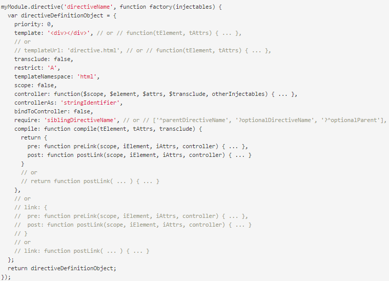
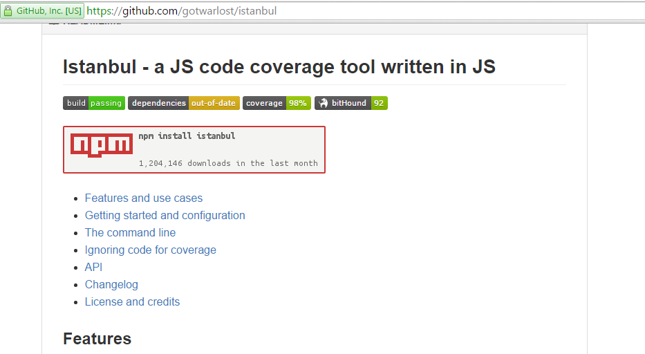
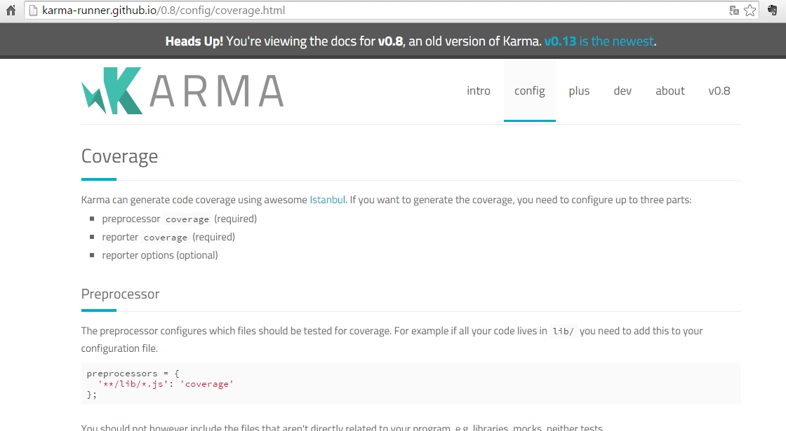
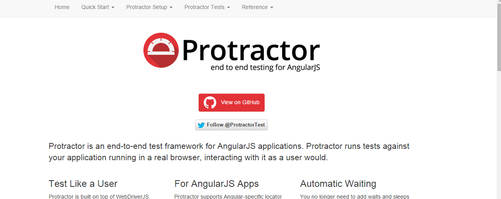
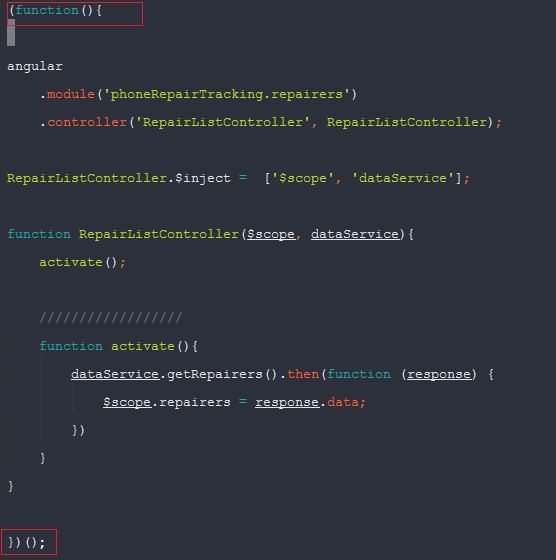
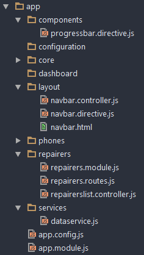

Concepts de Bases et les meilleures pratiques.

Par Moncef Hassein-bey / @moncef_hbey
Développeur Web @Service Factory
Algiers Developer Meetup, 3 octobre 2015
Agenda :
Partie I : Concepts de bases + concepts avancés
- Two ways data binding
- controllers
- Injection de dépendances.
- Directives
- Directives personalisées
- Services
- Filtres
- Modules
- Routage
- Unit testing : service, controller, directives, providers.
- Evenements
- Le contexte AngularJS
Partie II : Meilleures pratiques :
- SRP.
- 1 type per file.
- IIFE.
- Nommage.
- Controllers.
- Services.
- Directives.
- Structures d'un projet angularJS.
- Modules.
- Modularité.
- DI annotations.
- Strict-di mode
- Réduire les watchers : utilisation du (::) + partage des objets à la places des primitives.
Partie I :
Survol sur les concepts de bases.
Quelques concepts avancés.
Two ways data binding

Controlleur
- Fonction constructeur.
- $scope comme paramètre.
- Pas le même controlleur que sur MVC backend.
- ngController pour attacher en vue.
Injection implicite
Injection avec un tableau d'annotations.
Injection avec la propriété $inject.
Directives
- Marqueur de DOM : elements, attributs, commentaires
- $compile
-
Directives qui font partie de AngularJS
- ngRepeat
- ng-model
- ngSrc
- ngOptions
- ngBind
- ngClass
- ...
Directive personalisées
Services
- service, factory sont des singletons
- angular.service
- angular.factory
function factory(name, factoryFn) {
return provider(name, { $get: factoryFn });
}
function service(name, constructor) {
return factory(name, ['$injector', function($injector) {
return $injector.instantiate(constructor);
}]);
}
Filtres
- Formate la valeur d'une expression pour l'affichage.
- Utilsable en vue, controlleurs, services, directives.
Module
- Conteneur, namespacing, ...
- Setter : angular.module('myModule', ['myDependeciens'])
- Getter : angular.module('myModule')
Test unitaire pour AngularJS
Url : http://karma-runner.github.io/0.13/intro/installation.html
Test du controlleur
Test du service
Test du directive
Test du provider
angular.provider('myServiceProvider', function(){
var myService = {};
this.config = function(options){
myService.options = options;
}
this.$get = function(){
return myService;
}
})
describe('myServiceProvider', function(){
var _myServiceProvider;
// inject module
// utilise fake config module .config
angular.module('fakeModule').config(function(myServiceProvider){
_myServiceProvider = myServiceProvider;
})
it('shoud return options', function(){
expect(_myServiceProvider.config).toBeDefined();
expect(_myServiceProvider.$get().options).toBeDefined();
})
})
Couverture du test
 Url : http://karma-runner.github.io/0.8/config/coverage.html
Les tests end-to-end (e2e)
Routage
- ngRoute.
- ngView.
- $routeProvider.
- $route & $routeParams.
- ui-router.
Evenements
- $scope.$emit(name, args)
- $scope.$broadcast(name, args)
- $scope.$on(name, fn)
Le contexte d'angularJS
- Cycle de digestion
- Liste de $watch
- $apply et $digest
Partie II : meilleures pratiques.
SRP (alias: Single Responsibility Principe)
1 type par fichier.
IIFE
Immediately Invoked Function Expression
Nommage
- Structure du nom des fichiers et composant.
- Nommage par fonctionalitée.
DI annotations
- Annotations via $inject
- ng-annotate (@ngInject)
Strict-di mode
Structures des projects AngularJS
module
Modularité
- Des petits modules conteneurs.
- Un module par fonctionalitée.
- Beaucoup de fichier par module, un signe pour créer un autre.
Controllers
- controllerAS
- activate() ou init()
- Implémentation en bas, API en haut
Services
Directives
Réduire les watchers :
- Une fois binding (::)
- Partage des objects.